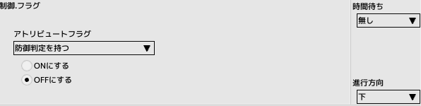
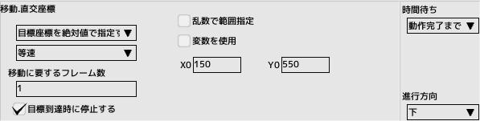
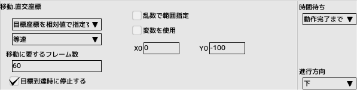
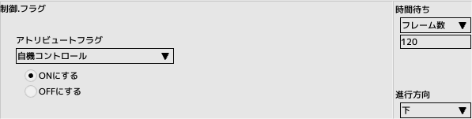
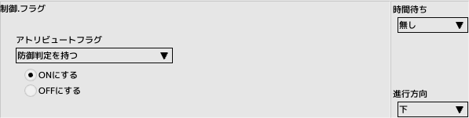
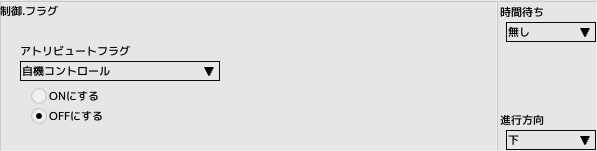
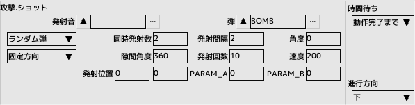
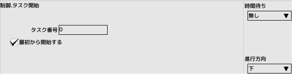
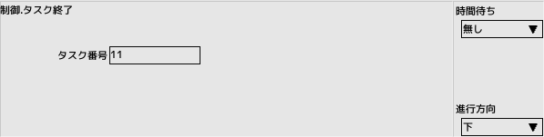

7. Extend the player
Create appearance and destruction scenesKeep the project file created in the previous tutorial open
 back to the original page
back to the original page
| Turn off the defensive judgment and make it invincible |  |
| Turn off the autocontrol and make it inoperable | |
|
Move down off the screen and make it stop there Coordinates are chosen to be specified in absolute coordinates. The top left corner of the screen will be (0,0) Moving requires at least 1 frame |
 |
|
Move toward the screen and make it stop after moving The coordinates are chosen to be specified in relative coordinates It takes 60 frames (1 second) to move |
 |
|
Turn on the autocontrol and allow it to operate Wait 120 frames (2 seconds) in this state (invincible) |
 |
| Turn on the defensive judgment and release the invincibility |  |
| Stop the task "0: Main" and end the appearance scene |
| Turn off the autocontrol and make it inoperable |  |
| Scatter the explosive characters with the shot panel |  |
| Launch the task appeared |  |
| Finish the destruction task |  |